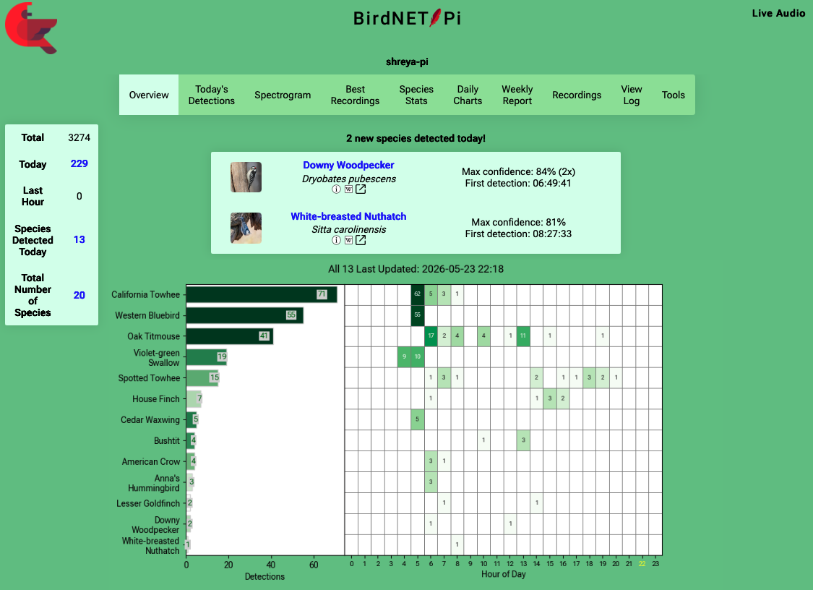
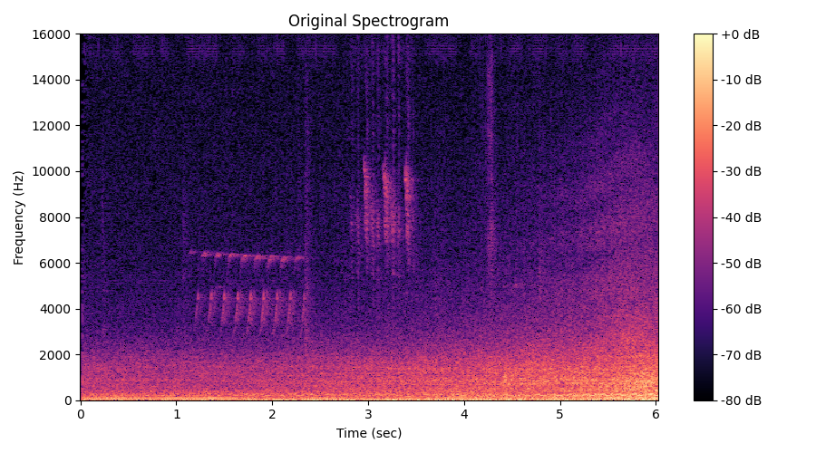
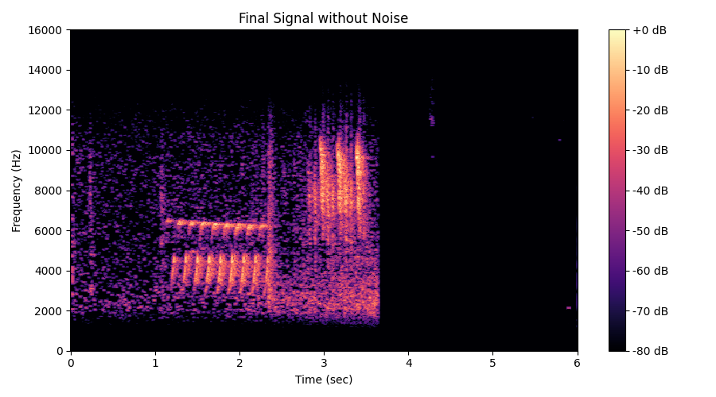

Edge Sensing: Real-Time Bird Detection and Classification
In this project, I built a real-time passive acoustic monitoring system for bird detection and classification at home. I then used signal processing methods to remove noise from wav files and amplify bird vocalization signals.
Hardware / Software Setup

Dashboards: Example Outputs


Noise Removal and Signal Enhancement Using Signal Processing Techniques
I tested frequency domain filtering, spectral subtraction, Wiener Filtering, Median filtering, noise gating, and frequency dependent gain techniques to remove noise and amplify bird vocalizations.
Results are shown below:


View Full Jupyter Notebook
Ongoing Work
Model Compression for efficient inference on the edge (partnership with moco: Efficient Inference).